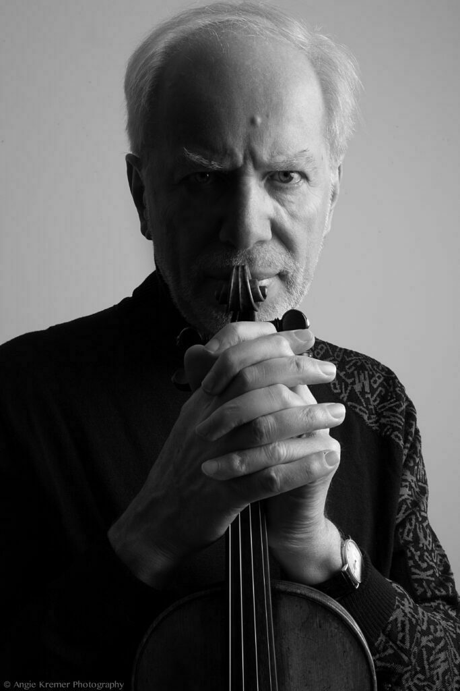

<!DOCTYPE html>
<html></html>
<head>
 <title>Gidon Kremer</title>
 <meta charset="utf-8">
</head>
<body>
 <h1><a href="index.html">Maestro Gidon Kremer</a></h1>
<ol>
 <li><a href="1.html">About</a></li>
 <li><a href="2.html">News</a></li>
 <li><a href="3.html">Event</a></li>
 </ol>
 <h2>Gidon kremer에 대하여</h2>
 <p>Among the world’s leading violinists, <strong><a href="https://www.gidonkremer.net/" target="_blank" title="html5 specification">Gidon <u>Kremer</u></strong></p></a> has perhaps pursued the most unconventional career.</p> <br>He was born on 27 February 1947 in Riga, Latvia, and began studying at the age of four with his father and grandfather, both distinguished string players. <br><br>At the age of seven, he enrolled as a student at Riga Music School where he made rapid progress, and at sixteen he was awarded the First Prize of the Latvian Republic. <p>Two years later he began his studies with David Oistrakh at the Moscow Conservatory.</p> Gidon Kremer went on to win a series of prestigious awards, including prizes in the 1967 Queen Elisabeth Competition in Brussels and 1969 Montreal International Music Competition and first prize in both the 1969 Paganini and 1970 Tchaikovsky International Competitions. </body></html>
